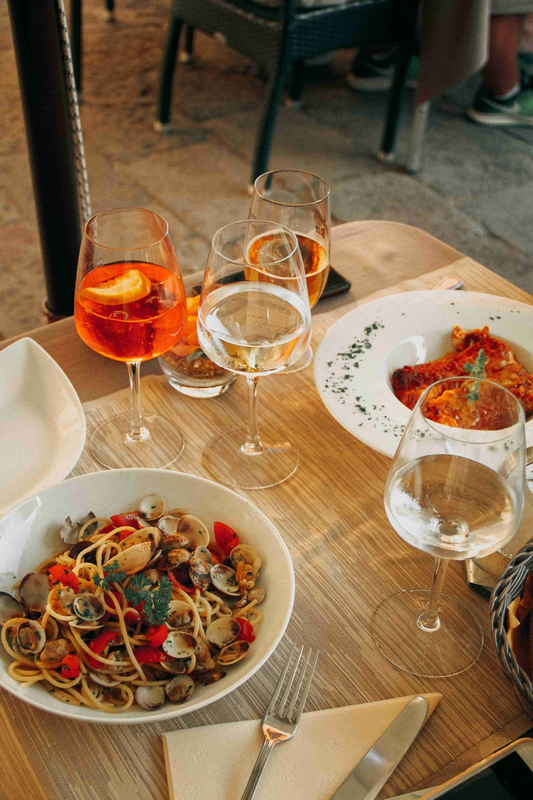

EST. 1961
Honest, Simple, Hearfelt, Delicious

At Saint-Laurent, we believe that true culinary artistry lies in simplicity and the finest ingredients. Established in 1961, our philosophy has always been to serve natural, healthy, and incredibly tasty dishes. Dine with us to experience a symphony of flavors, meticulously crafted with heart-felt honesty, turning every meal into a cherished memory. Our chefs are dedicated to creating an unforgettable journey for your palate, ensuring each visit is a celebration of exquisite cuisine and warm hospitality.